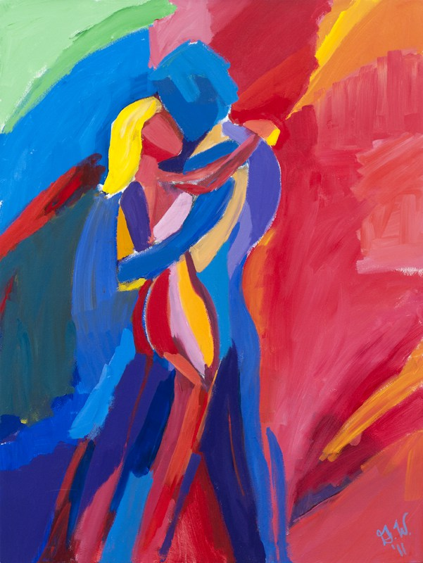

News
November 2016
My painting Peace and Happiness will be featured in the Katonah Museum Artists’ Association All Member Show at the Katonah Village Library. The exhibit runs from November 2nd through December 29th. Please stop by!
July 2016
I published my first art book, Energy is All Around: Paintings and Personal Reflections. This work is the outcome of a five-year exploration of movement, and includes 16 paintings with accompanying prose. Thanks to Duggal Visual Solutions for beautifully designing and printing the book.
January 2016
Two of my paintings, Leap of Faith and Red Tango, will be featured in a year-long exhibition at Northern Westchester Hospital (NWH) that marks the 100th anniversary of the hospital. I am thrilled and honored to be part of this special celebration for NWH, the place where my daughter was born last May.
November 2015
A framed print of In the Groove will be featured in the Katonah Museum Artists’ Association All Member Show at the Katonah Village Library. The exhibit runs from November 7th through December 2nd. Please stop by!
April 2015
The Kissers will be featured in “Close to the Edge,” a juried exhibition at the Pound Ridge Library (Exhibit Flyer) in Pound Ridge, NY. The exhibit runs from April 11th to May 14th. If you are in the area, come check it out!

March 2015
Two of my paintings, the Runners and Times Square, are now on display at the Northern Westchester Hospital Show. The exhibit highlights local artists and runs from March 2015 to December 2015. I am so pleased and honored to be able to brighten NWH with these paintings.
February 2015
Framed prints of my artwork are now available for purchase at Westchester House & Home in Mt. Kisco, New York. Please check out their website at www.westchesterhousenadhome.com
January 2015
Large-scale prints of my fitness inspired paintings are now on display in New York City at Synergy Fitness (138 West 14th Street) and the McBurney YMCA (125 West 14th Street). Come visit, feel the pump and enjoy the art!